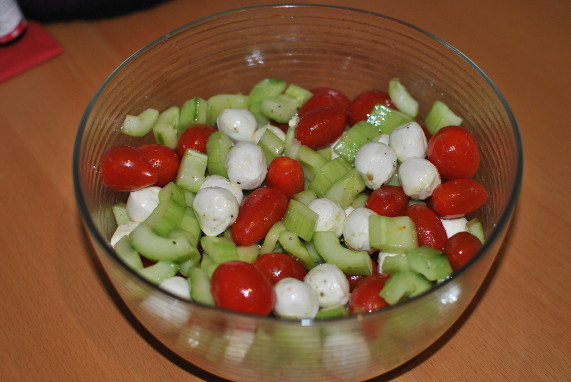

Tomaten-Ball-Salat

- Zubereitung: ca. 30 Minuten
- Für 8 Portionen
Zutaten
- 6 EL weißer Balsamico
- 2 EL Honig
- 1 TL milder Senf
- 4-5 EL Olivenöl
- 2 Salatgurken
- 600 g rote und gelbe Kirschtomaten
- 500 g Mini-Mozzarellakugeln
Zubereitung
- Den Essig mit Salz, Pfeffer, Honig und Senf verrühren und abschmecken. Das Öl darunterschlagen.
- Salatgurken waschen, schälen, längs halbieren und entkernen. Mit einem Kugelausstecher kleine Kugel ausstechen.
- Alle Salatzutaten mit dem Dressing mischen.